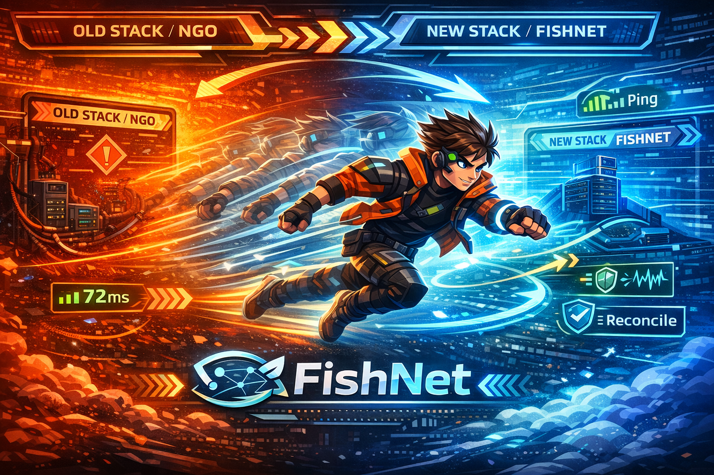

Уважаемый студент! В этой практике вы перенесёте проект с Unity NGO на FishNet. Код придётся переписать — это нормально. Сравнивайте API двух фреймворков и обращайтесь к документации FishNet.
Практика 3. Миграция на FishNet и предсказание движения

Цель
Перенести проект с NGO на FishNet и настроить клиентское предсказание:
- импортировать FishNet и настроить
NetworkManager; - переписать скрипты синхронизации с NGO API на FishNet API;
- настроить клиентское предсказание (CSP) для плавного движения;
- протестировать игру с искусственной задержкой 200–500 мс.
Ожидаемый результат
После выполнения практики:
- проект полностью работает на FishNet (NGO удалён);
- движение, стрельба и синхронизация HP функционируют как раньше;
- при пинге 200 мс движение остаётся плавным благодаря предсказанию;
- студент понимает ключевые различия API между NGO и FishNet.
Подготовка проекта
- Сделайте резервную копию проекта (новая ветка в Git или копия папки).
- Удалите пакеты
Netcode for GameObjectsиUnity Transportчерез Package Manager. - Импортируйте FishNet из Asset Store или через Git URL.
- Добавьте на сцену объект с компонентом
NetworkManagerот FishNet и настройте транспорт (Tugboat). - Зарегистрируйте префабы игрока и снаряда в
Default Prefab ObjectsFishNet.
Проверь
Проект компилируется без ошибок после удаления NGO и импорта FishNet. На сцене есть NetworkManager с настроенным транспортом.
Этап 1. Замена базовых скриптов на FishNet API
Перепишите сетевые скрипты, заменяя атрибуты и базовые классы NGO на аналоги FishNet.
- Замените
NetworkBehaviourиз NGO наNetworkBehaviourиз FishNet. - Замените
NetworkVariable<T>на[SyncVar]с хукомOnChange. - Замените
[ServerRpc]на[ServerRpc]FishNet (атрибут тот же, но пространство имён другое). - Замените
[ClientRpc]на[ObserversRpc]. - Замените проверку
IsOwnerнаbase.IsOwner.
Подсказка: таблица соответствий NGO → FishNet
// ===== NGO ===== // ===== FishNet =====
using Unity.Netcode; using FishNet.Object;
using FishNet.Object.Synchronizing;
NetworkBehaviour NetworkBehaviour
NetworkVariable<int> HP = new(100); [SyncVar] public int HP = 100;
[ServerRpc] [ServerRpc]
void DoSomethingServerRpc() {} void DoSomething(/* ... */) {}
[ClientRpc] [ObserversRpc]
void NotifyClientRpc() {} void NotifyObservers(/* ... */) {}
IsOwner base.IsOwner
IsServer base.IsServerInitialized
OnNetworkSpawn() public override void OnStartNetwork()
OnNetworkDespawn() public override void OnStopNetwork()
NetworkObject.Spawn() ServerManager.Spawn(obj)
NetworkObject.Despawn() ServerManager.Despawn(obj)Проверь
Проект компилируется. Все скрипты используют пространство имён FishNet вместо Unity.Netcode.
Этап 2. Перенос движения и синхронизации
Убедитесь, что базовый геймплей работает на FishNet так же, как работал на NGO.
- Переведите скрипт движения на FishNet: проверка
base.IsOwner, использованиеNetworkTransformот FishNet. - Переведите синхронизацию HP и ника на
[SyncVar]с хуками для обновления UI. - Переведите стрельбу: спавн снаряда через
ServerManager.Spawn(). - Проверьте подключение Host/Client и базовый геймплей.
Подсказка: SyncVar с хуком для HP
В FishNet [SyncVar] заменяет NetworkVariable. Хук вызывается автоматически при изменении значения.
using FishNet.Object;
using FishNet.Object.Synchronizing;
using TMPro;
using UnityEngine;
public class PlayerNetwork : NetworkBehaviour
{
[SyncVar(OnChange = nameof(OnHpChanged))]
public int HP = 100;
[SyncVar(OnChange = nameof(OnNicknameChanged))]
public string Nickname = "Player";
[SerializeField] private TMP_Text _hpText;
[SerializeField] private TMP_Text _nicknameText;
private void OnHpChanged(int oldValue, int newValue, bool asServer)
{
_hpText.text = $"HP: {newValue}";
}
private void OnNicknameChanged(string oldValue, string newValue, bool asServer)
{
_nicknameText.text = newValue;
}
[ServerRpc]
public void SetNicknameServerRpc(string nickname)
{
Nickname = string.IsNullOrWhiteSpace(nickname)
? $"Player_{OwnerId}"
: nickname.Trim();
}
}Проверь
Два окна подключаются, персонажи двигаются, HP и ник синхронизируются, стрельба работает — всё на FishNet.
Этап 3. Настройка клиентского предсказания (CSP)
Клиентское предсказание позволяет игроку видеть мгновенный отклик на свой ввод, даже если сервер ещё не подтвердил действие.
- Используйте механизм
ReplicateиReconcileот FishNet для движения. - Создайте структуру входных данных (
MoveData) с горизонтальным и вертикальным вводом. - В методе
Replicateприменяйте движение на основе входных данных. - В методе
Reconcileкорректируйте позицию при расхождении с сервером.
Подсказка: каркас CSP-движения
FishNet предоставляет атрибуты [Replicate] и [Reconcile] для автоматического предсказания и отката.
using FishNet.Object;
using FishNet.Object.Prediction;
using UnityEngine;
public struct MoveData : IReplicateData
{
public float Horizontal;
public float Vertical;
private uint _tick;
public void Dispose() { }
public uint GetTick() => _tick;
public void SetTick(uint value) => _tick = value;
}
public struct ReconcileData : IReconcileData
{
public Vector3 Position;
private uint _tick;
public void Dispose() { }
public uint GetTick() => _tick;
public void SetTick(uint value) => _tick = value;
}
public class PlayerMovementPredicted : NetworkBehaviour
{
[SerializeField] private float _speed = 5f;
public override void OnStartNetwork()
{
base.TimeManager.OnTick += OnTick;
}
public override void OnStopNetwork()
{
base.TimeManager.OnTick -= OnTick;
}
private void OnTick()
{
// Владелец собирает ввод и отправляет на сервер.
if (base.IsOwner)
{
MoveData md = new MoveData
{
Horizontal = Input.GetAxisRaw("Horizontal"),
Vertical = Input.GetAxisRaw("Vertical")
};
Replicate(md);
}
else
{
Replicate(default);
}
// Сервер периодически шлёт «истинное» состояние для коррекции.
if (base.IsServerInitialized)
{
ReconcileData rd = new ReconcileData
{
Position = transform.position
};
Reconcile(rd);
}
}
[Replicate]
private void Replicate(
MoveData md,
ReplicateState state = ReplicateState.Invalid,
Channel channel = Channel.Unreliable)
{
Vector3 move = new Vector3(md.Horizontal, 0f, md.Vertical).normalized;
transform.position += move * _speed * (float)base.TimeManager.TickDelta;
}
[Reconcile]
private void Reconcile(
ReconcileData rd,
Channel channel = Channel.Unreliable)
{
transform.position = rd.Position;
}
}Проверь
Движение персонажа мгновенно реагирует на ввод даже при наличии сетевой задержки. Позиция корректируется сервером без видимых рывков.
Этап 4. Тестирование с искусственным лагом
Проверьте, что предсказание действительно помогает при высоком пинге.
- В настройках транспорта FishNet (
Tugboat) включитеLatency Simulator. - Установите задержку 200 мс, затем 500 мс.
- Сравните движение с предсказанием и без (временно отключите CSP).
- Убедитесь, что при 200 мс с включённым предсказанием движение остаётся плавным.
- Обратите внимание на reconcile-коррекции: при правильной настройке они почти незаметны.
Проверь
С лагом 200 мс и включённым CSP персонаж двигается плавно. Без CSP заметна задержка между нажатием клавиши и началом движения.
Что нужно реализовать самостоятельно
- полный перенос скриптов с NGO на FishNet API;
- замену
NetworkVariableна[SyncVar]с хуками обновления UI; - замену
[ClientRpc]на[ObserversRpc]; - структуры
MoveDataиReconcileDataдля предсказания; - подключение к
TimeManager.OnTickдля tick-based движения; - тестирование и сравнение поведения с лагом и без.
Требования к сдаче
- Продемонстрировать, что проект полностью работает на FishNet (нет зависимостей от NGO).
- Показать подключение Host/Client, синхронизацию HP и ника.
- Показать движение с клиентским предсказанием.
- Продемонстрировать работу с искусственным лагом 200 мс: плавное движение с CSP.
- Показать разницу между движением с CSP и без CSP при лаге.
- Предоставить видео работы приложения с демонстрацией лага.
- Предоставить ссылку на Git-репозиторий проекта.